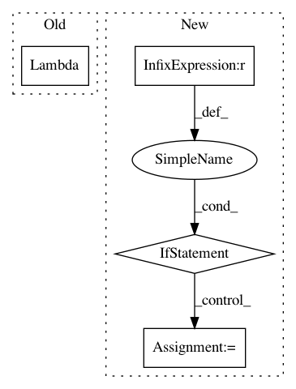

ce597a0b10658043b6d6d8ffed3fff4a6ebbc1ea,stellargraph/layer/appnp.py,APPNP,__init__,#APPNP#Any#Any#Any#Any#Any#Any#Any#Any#,54
Before Change
//gather the nodes from the output indices - inputs = [all node predictions, output node indices]
self._layers.append(
Lambda(lambda inputs:
K.expand_dims(
K.gather(
K.squeeze(inputs[0], 0),
tf.cast(K.squeeze(inputs[1], 0), tf.int32)
),
0
)
)
)
def __call__(self, x):
After Change
if not isinstance(approx_iter, int) or approx_iter <= 0:
raise ValueError("approx_iter should be a positive integer")
if (transport_probability > 1.0) or (transport_probability < 0.0):
raise ValueError("transport_probability should be between 0 and 1 (inclusive)")
self.layer_sizes = layer_sizes
self.transport_probability = transport_probability
self.activations = activations
self.bias = bias
self.dropout = dropout
self.kernel_regularizer = kernel_regularizer
self.generator = generator
self.support = 1
self.method = generator.method
self.approx_iter = approx_iter
// Check if the generator is producing a sparse matrix
self.use_sparse = generator.use_sparse
if self.method == "none":
In pattern: SUPERPATTERN
Frequency: 3
Non-data size: 4
Instances
Project Name: stellargraph/stellargraph
Commit Name: ce597a0b10658043b6d6d8ffed3fff4a6ebbc1ea
Time: 2019-09-26
Author: u5824685@anu.edu.au
File Name: stellargraph/layer/appnp.py
Class Name: APPNP
Method Name: __init__
Project Name: fizyr/keras-retinanet
Commit Name: 37d8d41a0b738fb8a4b9519a6d358c4f7e815382
Time: 2017-11-08
Author: hansg91@gmail.com
File Name: keras_retinanet/models/retinanet.py
Class Name:
Method Name: retinanet_bbox
Project Name: mathics/Mathics
Commit Name: 3159e4b8f5d863b87efa0f750ced348182adb1db
Time: 2020-09-07
Author: rb@dustyfeet.com
File Name: mathics/builtin/numpy_utils/with_numpy.py
Class Name:
Method Name: _create_ast_lambda